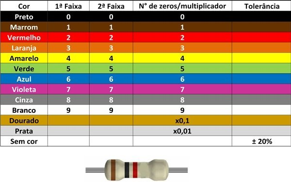
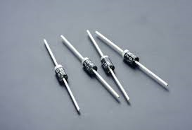
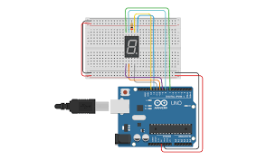
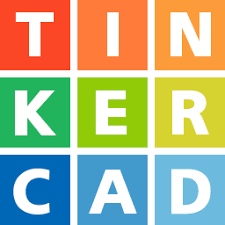
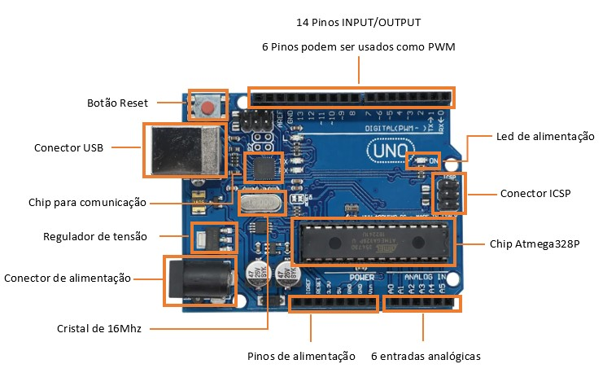

"Em eletrônica, componentes como resistores, LEDs e displays de sete segmentos são usados para controlar e exibir informações. O Arduino permite criar projetos interativos, conectando sensores e LEDs, e controlando-os por meio de programação. O multímetro é essencial para medir tensão, corrente e resistência em circuitos, enquanto o Tinkercad possibilita simulações virtuais de circuitos antes da construção física. Esses recursos são fundamentais para projetos eletrônicos práticos."
"Os resistores são componentes elétricos que limitam o fluxo de corrente em um circuito. Eles possuem diferentes valores de resistência, indicados em ohms (Ω). O valor de resistência de um resistor é geralmente representado por faixas coloridas pintadas em seu corpo, seguindo um código de cores padronizado. Cada cor representa um número, e, com base na sequência das faixas, é possível determinar o valor do resistor e sua tolerância."
"O diodo LED é um componente que emite luz ao receber uma corrente elétrica, sendo amplamente utilizado como indicador visual em circuitos."
"Já o display de sete segmentos é composto por sete LEDs em formato de número oito, permitindo representar dígitos de 0 a 9. Esse display é comum em eletrônicos para exibir números, como em calculadoras e relógios digitais."
"O Tinkercad é uma plataforma online que permite a criação de projetos 3D e simulações de circuitos. Um exemplo prático seria um circuito simples com um LED, resistor e um Potenciômetro, onde com base no valor do Potenciômetro ele acende ou apaga o LED. O Tinkercad oferece uma visão realista do circuito, e uma impressão de tela pode mostrar à disposição dos componentes e das conexões."
"A placa Arduino é uma plataforma de prototipagem eletrônica baseada em hardware e software de código aberto. É extremamente usado para criar projetos que envolvam sensores, LEDs, motores e outros componentes. As versões mais comuns incluem o Arduino Uno e o Arduino Mega."
"Um IDE Arduino é o ambiente de programação onde você pode escrever, compilar e enviar código para a placa Arduino. Um exemplo de programa simples é o código 'Blink', que faz um LED piscar em intervalos regulares, ideal para aprender como o Arduino funciona."
// código Arduino int sensor = 0; void setup() { pinMode(A0, INPUT); pinMode( 13, OUTPUT); }
void loop() { sensor = analogRead(A0); if (sensor > 512) { digitalWrite( 13, HIGH); } else { digitalWrite( 13, LOW); } }
"As entradas digitais no Arduino leem sinais em dois estados: alto (HIGH, 5V) ou baixo (LOW, 0V). Eles são úteis para interpretar sinais como o pressionamento de botões, onde o sinal só precisa de dois estados."
"O Arduino não possui uma saída analógica verdadeira, mas sim saídas PWM (modulação por largura de pulso), que simulam uma saída analógica. Com PWM, a placa pode controlar a intensidade dos LEDs ou a velocidade dos motores."
"As saídas digitais no Arduino enviam sinais em dois estados (HIGH ou LOW), e podem ser usadas para ligar ou desligar componentes simples, como LEDs, ou ativar relés para controlar dispositivos maiores."
"Um multímetro é um instrumento de medição usado para verificar tensão (V), corrente (A), resistência (Ω), e outras características elétricas. Ele é essencial em eletrônica para diagnósticos e verificações de circuito."
"Alguns multímetros avançados medem capacitância (F), frequência (Hz), entre outras grandezas."
"As entradas analógicas no Arduino permitem que a placa leia sinais variáveis, como a tensão de um sensor de luz ou temperatura. A placa converte o valor analógico (que varia continuamente) em um valor digital compreendendo entre 0 e 1023, facilitando a interação com sensores."